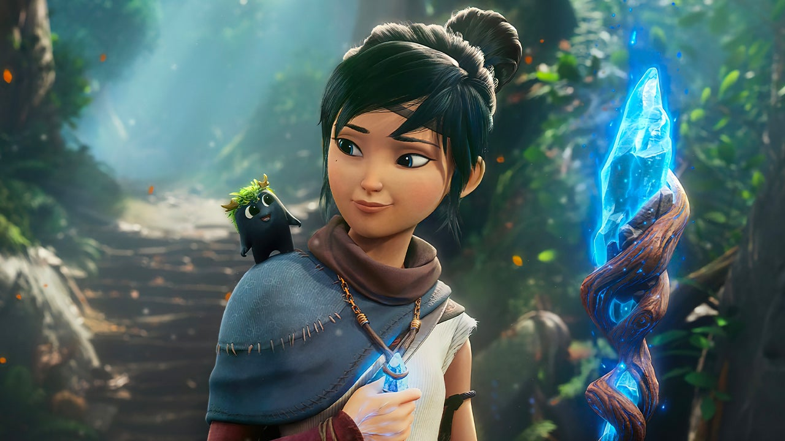

Animation Showreel
Studying animation online with AnimSchool and receving a associate's degree in Animation has given me a keen eye for animaiton both 3D and 2D.
Animation Software used
- Maya
- Blender
- Houdini
- Unreal Engine
Experience
Growing up I did a ton of stop-motion animation and then studing with the mentors at AnimSchool and graduating with an associate's in 3D aniamtion I was able to do contract work remotely for teams around the world on games and appliacions as an animator.
Spotlights
Kena Bridge of Spirits: I had the amazing opportunity to work with Ember Lab on their then up-coming PS5 title Kena Bridge of Spirits. I was apart of the cinimatic animation team and in addition to that I also worked on NPC game animations and clean-up for the Player's animation.
AnimSchool: Below is my AnimSchool 3D aniamtion showreel.